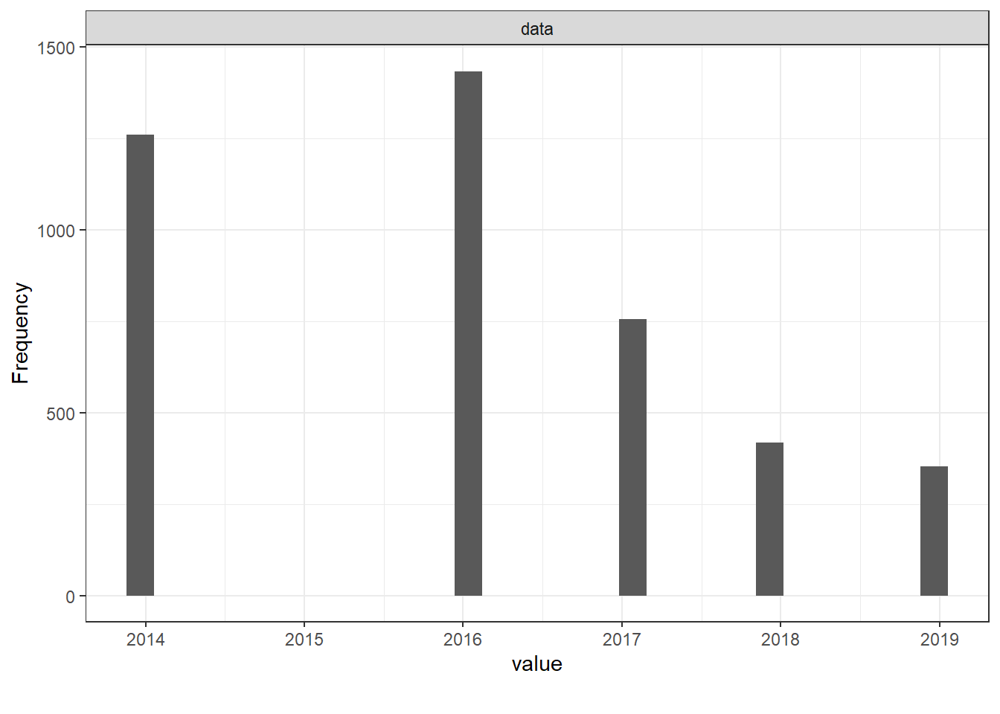
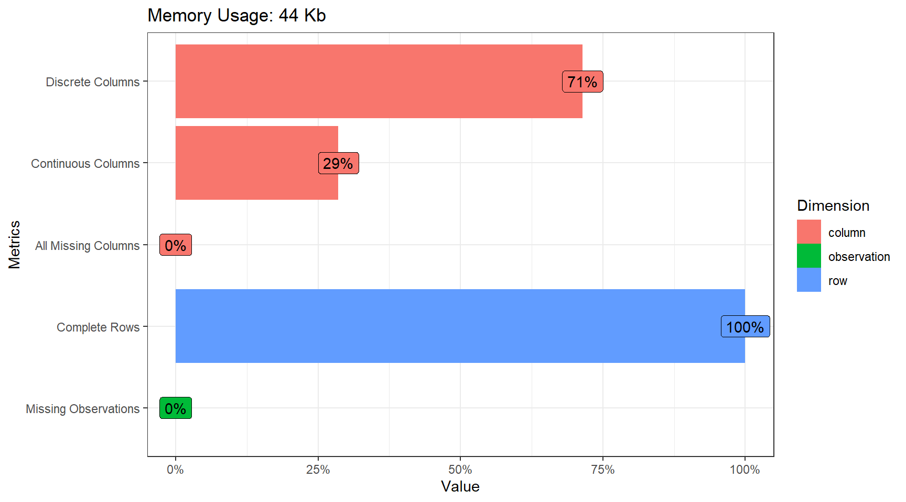
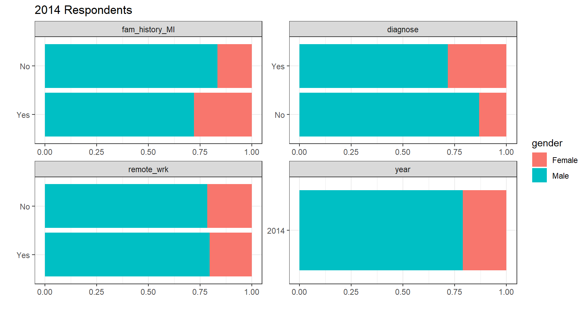
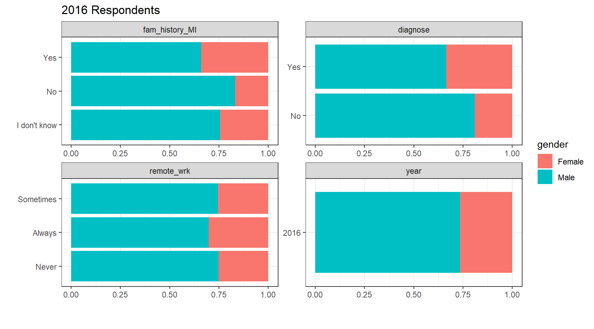
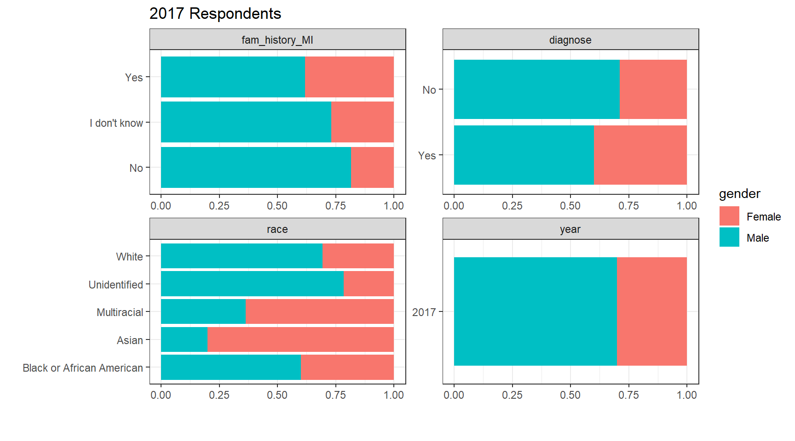
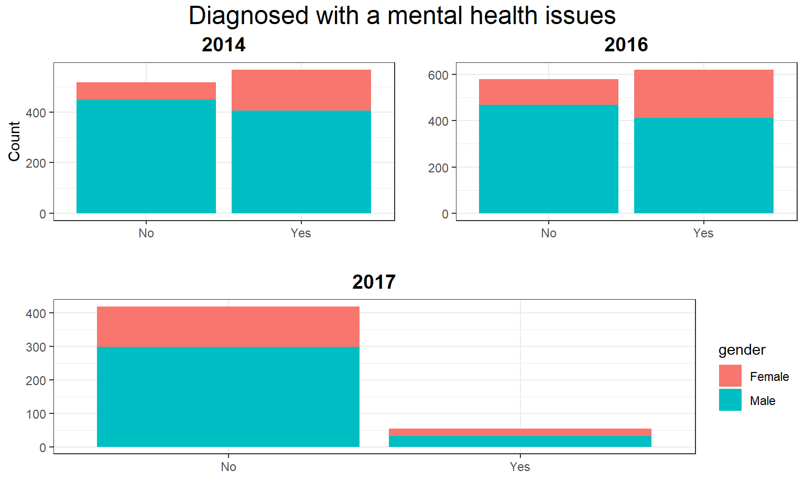
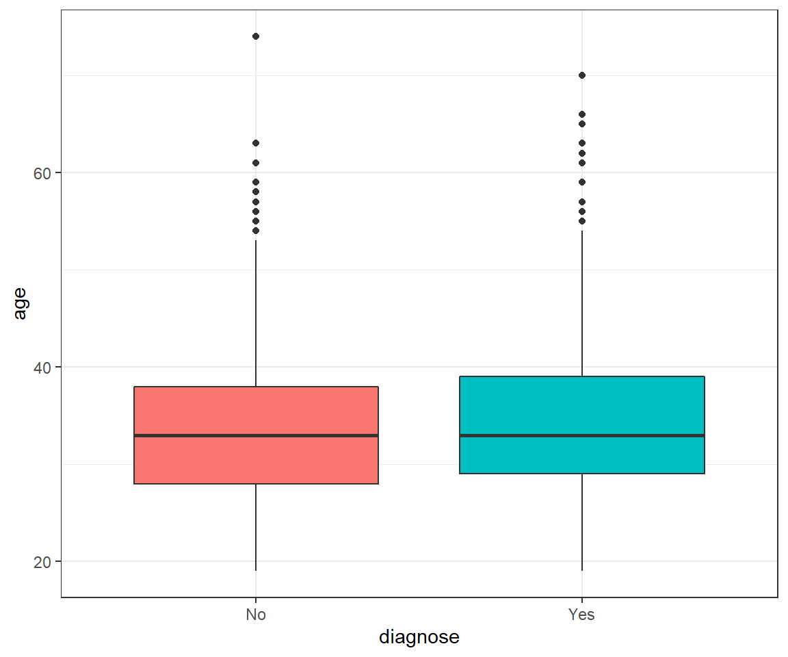
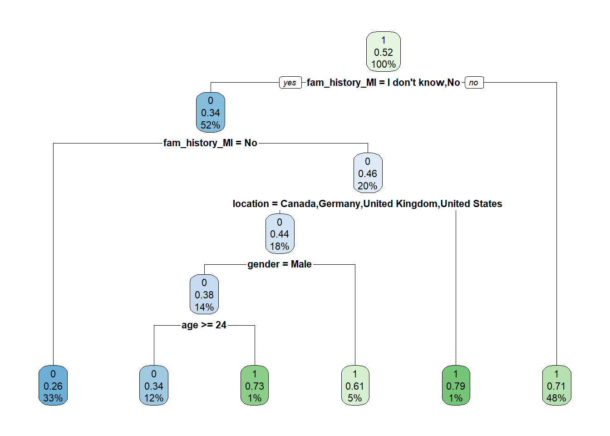
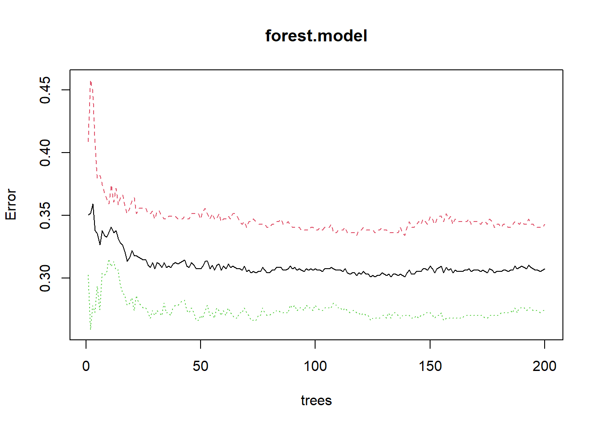
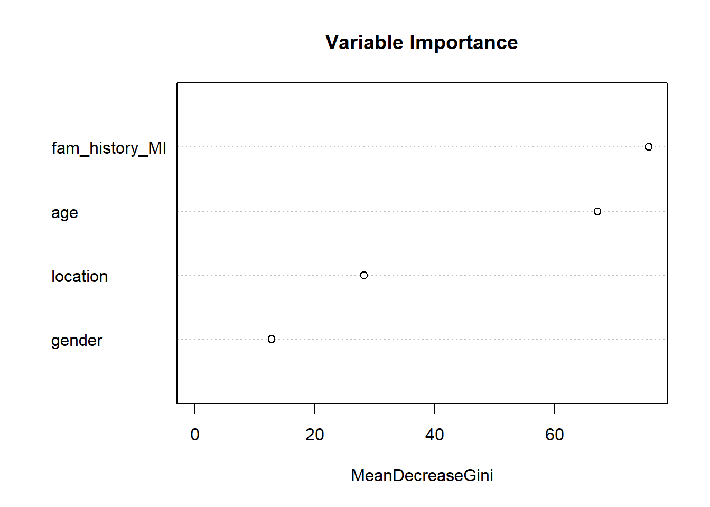

Over the past year we have heard about just how much the pandemic has exacerbated the mental health crisis around the world. According to research, an estimated 4 in 10 adults in the USA reported symptoms of anxiety or depressive disorder during the pandemic. This figure is up from 1 in 10 adults in 2019.
The social isolation, community lockdown and grim newsfeeds filled with pandemic casualties all paid a heavy toll on our mental health.This has led to health authorities such as the CDC issuing guidelines on how to cope with stress.
With this in mind, i decided to analyze what were the mental health trends before the pandemic, looking into in the tech industry which has been know to have serious mental health issues for its employees. Using data from Open Source Mental Illness (OSMI) using survey data from years 2014, 2016, 2017, 2018 and 2019. The data is on a database as it contains multiple tables. I will use SQLite queries to extract the variables of interest and continue with R script to analyze and visualize the relationships and patterns between the indicators.
After downloading the database, load it/create a connection within an R markdown chunk. You can declare the connection within the setup chunk and you wont need to constantly declare it in every subsequent chunk.
conn<-dbConnect(SQLite(), "mental_health.sqlite")
tables <- dbListTables(conn)Loading up the database connection we can see that the database has 3 tables, namely Answer, Question, Survey. The question table is basically a key for indicators which you might find interesting to analyze. Take a few minutes to query around the data you will realize each year has different number of observations and respondents (identified by the UserID column in the Answers table).
--Preview the tables in the database
SELECT
name,
type
FROM sqlite_master
WHERE type IN ("table","view");
| name | type |
|---|---|
| Answer | table |
| Question | table |
| Survey | table |
Join the tables with an SQL query and save the full dataset. The tables have (for some reason) been elongated. thankfully, we can pivot wider the tables with a single R command. This will allow us to glimpse all the indicators and select the ones most important for our analysis.
---select and re-arrange columns
select UserID as id, SurveyID as year, questiontext as question, AnswerText as answer
FROM Answer as A
LEFT JOIN Question as Q ON Q.questionid=A.QuestionID;
As you can see, this full dataset would have 107 variables! Clearly we have no intention of analyzing all variable. We shall subset the variables of interest.
The indicators of interest for this analysis are: 1. Age 2. Gender 3. Location 4. Remote work 5. Family history of mental illness 6. Respondent diagnosis of mental illness 7. Race
--You can preview the available indicators per survey year (e.g. the variables for 2016)
select Q.questiontext
from Question as Q
Left join Answer as A on A.QuestionID = Q.questionid
Where A.SurveyID=2016
group by questiontext;| questiontext |
|---|
| Are you self-employed? |
| Did you feel that your previous employers took mental health as seriously as physical health? |
| Did you hear of or observe negative consequences for co-workers with mental health issues in your previous workplaces? |
| Did your previous employers ever formally discuss mental health (as part of a wellness campaign or other official communication)? |
| Did your previous employers provide resources to learn more about mental health disorders and how to seek help? |
| Do you believe your productivity is ever affected by a mental health issue? |
| Do you currently have a mental health disorder? |
| Do you feel that being identified as a person with a mental health issue would hurt your career? |
| Do you feel that your employer takes mental health as seriously as physical health? |
| Do you have a family history of mental illness? |

We shall pick 3 years that had the most respondents, that is 2014, 2016 and 2017. This will help smooth things along the way with manageable datasets. I will query out the 3 distinct tables, with the identified indicators of interest. The reason for this is that each year, respondents did not answer the same questions all around.
---Subset a 2014 dataframe with variables of interest
select A.AnswerText as answer, A.SurveyID as year, A.UserID,
Q.questiontext as question
from Answer as A
LEFT JOIN Question as Q ON Q.questionid=A.QuestionID
WHERE A.SurveyID=2014
AND (Q.questionid==1 OR Q.questionid==2 OR Q.questionid==3
OR Q.questionid==6 OR Q.questionid==7 OR Q.questionid==93);
---Subset a 2016 dataframe with variables of interest
select A.AnswerText as answer, A.SurveyID as year, A.UserID,
Q.questiontext as question
from Answer as A
LEFT JOIN Question as Q ON Q.questionid=A.QuestionID
WHERE A.SurveyID=2016
AND (Q.questionid==1 OR Q.questionid==2 OR Q.questionid==3
OR Q.questionid==6 OR Q.questionid==34 OR Q.questionid==117 OR Q.questionid==118);---Subset a 2017 dataframe with variables of interest
select A.AnswerText as answer, A.SurveyID as year, A.UserID,
Q.questiontext as question
from Answer as A
LEFT JOIN Question as Q ON Q.questionid=A.QuestionID
WHERE A.SurveyID=2017
AND (Q.questionid==1 OR Q.questionid==2 OR Q.questionid==3
OR Q.questionid==6 OR Q.questionid==78 OR Q.questionid==89);A quick glance shows how each year there some questions that are not found in another year. Plus the number of respondents is not consistent across the years. It is better to subset each year as a unique dataset.
#Pivot the columns longer and rename them
df.2014<-df.2014%>%
pivot_wider(names_from = question,
values_from = answer)
df.2014<-df.2014%>%
rename(age=`What is your age?`,
location=`What country do you live in?`,
gender=`What is your gender?`,
fam_history_MI=`Do you have a family history of mental illness?`,
diagnose=`Have you ever sought treatment for a mental health disorder from a mental health professional?`,
remote_wrk=`Do you work remotely (outside of an office) at least 50% of the time?`,
id=UserID)
df.2016<-df.2016%>%
pivot_wider(names_from = question,
values_from = answer)
df.2016<-df.2016%>%
rename(age=`What is your age?`,
location=`What country do you live in?`,
gender=`What is your gender?`,
fam_history_MI=`Do you have a family history of mental illness?`,
diagnose=`Have you ever been diagnosed with a mental health disorder?`,
remote_wrk=`Do you work remotely?`,
id=UserID,
position=`Which of the following best describes your work position?`)
df.2017<-df.2017%>%
pivot_wider(names_from = question,
values_from = answer)
df.2017<-df.2017%>%
rename(age=`What is your age?`,
location=`What country do you live in?`,
gender=`What is your gender?`,
fam_history_MI=`Do you have a family history of mental illness?`,
diagnose= `Are you openly identified at work as a person with a mental health issue?`,
race=`What is your race?`,
id=UserID)After reshaping our data we see that the 2016 dataset has the most respondents, 1,433 while the 2017 dataset has the fewest, 756. We can also see that the only common indicators are age, gender and location and family mental history. As the respondents differ across the years, it would be unwise to combine the datasets using UserID. But we can analyze each dataset individually and draw comparisons.
Next step is to manipulate the data and improve consistency. Some indicators, such has race has text and numerical in the same column.
# 2014 dataset
# For consistency purposes, only keep those that identified as Male or Female
# Keep only locations with more than 20 observations in each of the survey years
country<-c("Australia", "Canada", "Germany", "Netherlands",
"United Kingdom", "United States")
#Transform categorical variables
df.2014<-df.2014%>%
filter(location %in% country)%>%
mutate(gender=as.factor(gender),
diagnose=as.factor(diagnose),
fam_history_MI=as.factor(fam_history_MI),
remote_wrk=as.factor(remote_wrk),
location=as.factor(location))%>%
filter(gender=="Male"|gender=="Female")%>%
mutate(diagnose= ifelse(diagnose==1, "Yes", "No"))
df.2014$id<-NULL
df.2014$age<-parse_number(df.2014$age)
# 2016 dataset
# Some of the columns are lists, unlist them
df.2016$age<-unlist(df.2016$age)
df.2016$gender<-unlist(df.2016$gender)
df.2016$location<-unlist(df.2016$location)
df.2016$fam_history_MI<-unlist(df.2016$fam_history_MI)
df.2016$diagnose<-unlist(df.2016$diagnose)
df.2016$remote_wrk<-unlist(df.2016$remote_wrk)
#Create country variable to match list of countries
country<-c("Australia", "Canada", "Germany", "Netherlands",
"United Kingdom", "United States of America")
df.2016<-df.2016 %>%
filter(gender=="Male"|gender=="Female")%>%
filter(location %in% country)%>%
mutate(location=ifelse(location=="United States of America",
"United States", location))%>%
mutate(gender=as.factor(gender),
diagnose=as.factor(diagnose),
fam_history_MI=as.factor(fam_history_MI),
remote_wrk=as.factor(remote_wrk),
location=as.factor(location))
df.2016$position<-NULL
df.2016$id<-NULL
df.2016$age<-parse_number(df.2016$age)
#There are some impossible values in the age column. Remove them
df.2016<-df.2016%>%
filter(age<100 & age>16)
# 2017 dataset
# This dataset has a Race column but it needs recoding
df.2017<-df.2017 %>%
filter(gender=="Male"|gender=="Female")%>%
filter(location %in% country)%>%
mutate(race=ifelse(race=="-1", "Unidentified",
ifelse(race=="More than one of the above", "Multiracial",
ifelse(race=="I prefer not to answer", "Unidentified", race))))%>%
mutate(diagnose= ifelse(diagnose==1, "Yes", "No"))%>%
mutate(gender=as.factor(gender),
diagnose=as.factor(diagnose),
fam_history_MI=as.factor(fam_history_MI),
location=as.factor(location),
race=as.factor(race))
df.2017$id<-NULL
df.2017$age<-parse_number(df.2017$age)
#Explore data after cleaning
plot_intro(df.2014, ggtheme = theme_bw())
plot_bar(df.2014, maxcat = 5, by="gender",
ggtheme = theme_bw(), ncol = 2,
title = "2014 Respondents")
plot_bar(df.2016, maxcat = 5, by="gender",
ggtheme = theme_bw(), ncol = 2,
title = "2016 Respondents")
plot_bar(df.2017, maxcat = 5, by="gender",
ggtheme = theme_bw(), ncol = 2,
title = "2017 Respondents") Exploratory Statistics: The dataset does not contain any missing values, which makes our easier. It would seem for each survey year, 7 out of 10 respondents are male. When it comes to mental health diagnosis, interestingly, a higher share of women have been diagnosed with mental health issues as compared not being diagnosed. This trend is consistent in all 3 survey years.
#2014
chi.square <- vector()
p.value <- vector()
cateVar <- df.2014 %>%
dplyr::select(-diagnose) %>%
keep(is.factor)
for (i in 1:length(cateVar)) {
p.value[i] <- round(chisq.test(df.2014$diagnose, unname(unlist(cateVar[i])), correct = FALSE)[3]$p.value, 3)
chi.square[i] <- unname(chisq.test(df.2014$diagnose, unname(unlist(cateVar[i])), correct = FALSE)[1]$statistic)
}
chi_sqaure_test <- tibble(variable = names(cateVar)) %>%
add_column(chi.square = chi.square) %>%
add_column(p.value = p.value)
knitr::kable(chi_sqaure_test, caption = "Chi-square Test (2014)")%>%
kable_styling()| variable | chi.square | p.value |
|---|---|---|
| gender | 37.515665 | 0.000 |
| location | 7.425781 | 0.191 |
| fam_history_MI | 151.375002 | 0.000 |
| remote_wrk | 0.798249 | 0.372 |
#2016
chi.square <- vector()
p.value <- vector()
cateVar <- df.2016 %>%
dplyr::select(-diagnose) %>%
keep(is.factor)
for (i in 1:length(cateVar)) {
p.value[i] <- round(chisq.test(df.2016$diagnose, unname(unlist(cateVar[i])), correct = FALSE)[3]$p.value, 3)
chi.square[i] <- unname(chisq.test(df.2016$diagnose, unname(unlist(cateVar[i])), correct = FALSE)[1]$statistic)
}
chi_sqaure_test <- tibble(variable = names(cateVar)) %>%
add_column(chi.square = chi.square) %>%
add_column(p.value = p.value)
knitr::kable(chi_sqaure_test, caption = "Chi-square Test (2016)")%>%
kable_styling()| variable | chi.square | p.value |
|---|---|---|
| gender | 32.525143 | 0.000 |
| location | 29.189604 | 0.000 |
| fam_history_MI | 186.839854 | 0.000 |
| remote_wrk | 4.119957 | 0.127 |
#2017
chi.square <- vector()
p.value <- vector()
cateVar <- df.2017 %>%
dplyr::select(-diagnose) %>%
keep(is.factor)
for (i in 1:length(cateVar)) {
p.value[i] <- round(chisq.test(df.2017$diagnose, unname(unlist(cateVar[i])), correct = FALSE)[3]$p.value, 3)
chi.square[i] <- unname(chisq.test(df.2017$diagnose, unname(unlist(cateVar[i])), correct = FALSE)[1]$statistic)
}
chi_sqaure_test <- tibble(variable = names(cateVar)) %>%
add_column(chi.square = chi.square) %>%
add_column(p.value = p.value)
knitr::kable(chi_sqaure_test, caption = "Chi-square Test (2017)")%>%
kable_styling()| variable | chi.square | p.value |
|---|---|---|
| gender | 2.854531 | 0.091 |
| location | 10.198122 | 0.070 |
| fam_history_MI | 3.018338 | 0.221 |
| race | 1.834553 | 0.766 |
Taking multiple Chi-square tests to check for independence of mental health diagnosis on gender, family history, race and remote work we can observe some relationships.
Gender: For the 2016 and 2017 surveys, we can reject the null hypothesis of independence between gender and mental health diagnosis. We fail to reject the null hypothesis for the survey year 2017.
Family history: For the 2016 and 2017 surveys, we can reject the null hypothesis of independence between family history and mental health diagnosis. We fail to reject the null hypothesis for the survey year 2017.
Remote work: Only 2016 and 2017 surveys have information on working remotely. As the p-values are above the threshold, we fail to reject the null hypothesis of independence between working remotely and mental health diagnosis. It would seem working remotely is not a good predictor for the state of mental health for employees in this dataset.
Race: The 2017 dataset has information on race but after running the chi-squared test, we fail to reject the null hypothesis of independence between race and mental health diagnosis.
Location: This variable is significant and not independent in the 2014 dataset. Its p-values in 2016 and 2017 are too high meaning we fail to reject the null hypothesis of independence between location and mental health diagnosis.
p1<-df.2014%>%
ggplot(aes(x=diagnose, fill=gender))+
geom_histogram(stat = "count")+
theme_bw()+
labs(title = "2014",
x="",
y="Count")+
theme(plot.title = element_text(face="bold", size=14, hjust = 0.5),
legend.position = "none")
p2<-df.2016%>%
ggplot(aes(x=diagnose, fill=gender))+
geom_histogram(stat = "count")+
theme_bw()+
theme(legend.position = "none")+
labs(title = "2016",
x="",
y="")+
theme(plot.title = element_text(face="bold", size=14, hjust = 0.5),
legend.position = "none")
p3<-df.2017%>%
ggplot(aes(x=diagnose, fill=gender))+
geom_histogram(stat = "count")+
theme_bw()+
labs(title = "2017",
x="",
y="")+
theme(plot.title = element_text(face="bold", size=14, hjust = 0.5),
axis.title.x = element_text(face="bold", size=14, hjust = 0.5, vjust = -0.8))
grid.arrange(arrangeGrob(p1,p2, ncol = 2),
heights=c(3.5/4, 3.5/4), ncol=1,
p3,nrow=2, top=textGrob("Diagnosed with a mental health issues",gp=gpar(cex=1.5,col="black")))
It would appear there is not significant relationship for our variables of interest within the 2017 dataset. This can be explained by the very low frequency of respondents that had a mental health diagnosis, as compared to 2016 and 2014. The distribution of respondents is more balanced in 2014 and 2016.
round(prop.table(table(df.2014$diagnose)),3)##
## No Yes
## 0.476 0.524round(prop.table(table(df.2016$diagnose)),3)##
## No Yes
## 0.483 0.517round(prop.table(table(df.2017$diagnose)),3)##
## No Yes
## 0.884 0.116rm(df.2014, df.2017)
df.2016$remote_wrk<-NULLThe 2014 and 2016 datasets have a good balance of data with the share of respondents with a diagnose of mental health issues at 48% for both. But the 2017 dataset is very unbalanced with just 12% with a diagnose of mental health.
It is clear that due to its poor sampling, the 2017 data set would be of very little value to us. Also the remote work variable has little to not relationship to the mental health of workers. Therefore the 2017 dataset was removed.
As location was only significant in the 2016 dataset, it would be ill advised to combine the 2016 and 2014 datasets. The are to be analyzed separately. I decided to remain with the 2016 dataset as it has more observations.
I primarily used binary classifiers to try and model the predictors against the state of a respondent having mental health issues or not. A comparison of Logistic Regression, Decision Tree and Random Forest was done at the end to select the best model.
#Test normality of age
shapiro.test(df.2016$age)##
## Shapiro-Wilk normality test
##
## data: df.2016$age
## W = 0.94888, p-value < 2.2e-16#Wilcox test to see if there is a significant difference in Age between people diagnosed with mental health issues.
wilcox.test(age ~ diagnose, data = df.2016,
exact = FALSE)##
## Wilcoxon rank sum test with continuity correction
##
## data: age by diagnose
## W = 169985, p-value = 0.1123
## alternative hypothesis: true location shift is not equal to 0df.2016%>%ggplot(aes(x=diagnose, y=age, fill=diagnose))+
geom_boxplot()+
theme_bw()+
theme(legend.position = "none")
#We can remove the year column and recode the diagnose column
df.2016$year<-NULL
df.2016<-df.2016%>%
mutate(diagnose=ifelse(diagnose=="Yes",1,0))
df.2016$diagnose<-as.factor(df.2016$diagnose)The data deviates significantly from a normal distribution as the p-value from Shapiro’s test is below the significance level alpha = 0.05.
As the p-value of the wilcox test is larger than the significance level alpha = 0.05, we can conclude that there is no significant difference in age between those diagnosed with mental health issues and those not.
#split data
set.seed(4)
index<- createDataPartition(df.2016$diagnose,p=0.8,list=FALSE)
training<- df.2016[index,]
testing<- df.2016[-index,]
#Check split
round(prop.table(table(df.2016$diagnose)),3)##
## 0 1
## 0.483 0.517round(prop.table(table(training$diagnose)),3)##
## 0 1
## 0.483 0.517round(prop.table(table(testing$diagnose)),3)##
## 0 1
## 0.481 0.519## Train the model
logit.mod <- glm(diagnose~., family = binomial(link = 'logit'),
data = training)
## Look at the result
summ(logit.mod)| Observations | 960 |
| Dependent variable | diagnose |
| Type | Generalized linear model |
| Family | binomial |
| Link | logit |
| χ²(9) | 184.81 |
| Pseudo-R² (Cragg-Uhler) | 0.23 |
| Pseudo-R² (McFadden) | 0.14 |
| AIC | 1164.97 |
| BIC | 1213.64 |
| Est. | S.E. | z val. | p | |
|---|---|---|---|---|
| (Intercept) | 0.78 | 0.58 | 1.35 | 0.18 |
| age | 0.01 | 0.01 | 1.32 | 0.19 |
| genderMale | -0.58 | 0.17 | -3.46 | 0.00 |
| locationCanada | -1.22 | 0.53 | -2.29 | 0.02 |
| locationGermany | -1.23 | 0.55 | -2.23 | 0.03 |
| locationNetherlands | -0.60 | 0.57 | -1.05 | 0.30 |
| locationUnited Kingdom | -1.11 | 0.48 | -2.30 | 0.02 |
| locationUnited States | -0.81 | 0.45 | -1.79 | 0.07 |
| fam_history_MINo | -0.88 | 0.20 | -4.45 | 0.00 |
| fam_history_MIYes | 1.01 | 0.18 | 5.55 | 0.00 |
| Standard errors: MLE |
## Predict the mental health against our test data
logit.pred.prob <- predict(logit.mod, testing, type = 'response')
logit.pred <- as.factor(ifelse(logit.pred.prob > 0.5, 1, 0))
head(testing, 3)## # A tibble: 3 x 5
## age gender location fam_history_MI diagnose
## <dbl> <fct> <fct> <fct> <fct>
## 1 34 Male United States Yes 1
## 2 30 Female United States Yes 1
## 3 26 Male United States Yes 0head(logit.pred, 3)## 1 2 3
## 1 1 1
## Levels: 0 1#Feature analysis
knitr::kable(round(anova(logit.mod, test="Chisq"),3),
caption = "Likelihood Ratio test")%>%
kable_styling()| Df | Deviance | Resid. Df | Resid. Dev | Pr(>Chi) | |
|---|---|---|---|---|---|
| NULL | NA | NA | 959 | 1329.776 | NA |
| age | 1 | 1.010 | 958 | 1328.766 | 0.315 |
| gender | 1 | 27.296 | 957 | 1301.470 | 0.000 |
| location | 5 | 15.639 | 952 | 1285.831 | 0.008 |
| fam_history_MI | 2 | 140.861 | 950 | 1144.970 | 0.000 |
#Odd ratio
knitr::kable(round(exp(cbind(coef(logit.mod), confint.default(logit.mod))),3),
caption = "Odds Ratio")%>%
kable_styling()| 2.5 % | 97.5 % | ||
|---|---|---|---|
| (Intercept) | 2.185 | 0.702 | 6.796 |
| age | 1.011 | 0.995 | 1.029 |
| genderMale | 0.562 | 0.405 | 0.778 |
| locationCanada | 0.295 | 0.104 | 0.837 |
| locationGermany | 0.292 | 0.099 | 0.863 |
| locationNetherlands | 0.548 | 0.178 | 1.690 |
| locationUnited Kingdom | 0.331 | 0.129 | 0.850 |
| locationUnited States | 0.443 | 0.182 | 1.079 |
| fam_history_MINo | 0.414 | 0.281 | 0.610 |
| fam_history_MIYes | 2.740 | 1.919 | 3.912 |
# Evaluation Metrics
log.result <- confusionMatrix(data = logit.pred, testing$diagnose,
positive = "1")
log.precision <- log.result$byClass['Pos Pred Value']
log.recall <- log.result$byClass['Sensitivity']
log.F1 <- log.result$byClass['F1']
log.result## Confusion Matrix and Statistics
##
## Reference
## Prediction 0 1
## 0 78 35
## 1 37 89
##
## Accuracy : 0.6987
## 95% CI : (0.6363, 0.7562)
## No Information Rate : 0.5188
## P-Value [Acc > NIR] : 1.156e-08
##
## Kappa : 0.3963
##
## Mcnemar's Test P-Value : 0.9062
##
## Sensitivity : 0.7177
## Specificity : 0.6783
## Pos Pred Value : 0.7063
## Neg Pred Value : 0.6903
## Prevalence : 0.5188
## Detection Rate : 0.3724
## Detection Prevalence : 0.5272
## Balanced Accuracy : 0.6980
##
## 'Positive' Class : 1
## From the logistic regression we can see the following predictors with the lowest p-values:
Age: As age increases, respondents were slightly more likely to have been diagnosed with mental health issues.
Gender: Men were less likely to have been diagnosed with mental health issues as compared to women respondents.
Family history: People with a family history of mental health issues are more likely to also be diagnosed with mental health issues.
A feature analysis shows that gender and family history are the strongest predictors of mental health in the survey response. In fact, an odds ratio analysis shows that if a respondent has a family history of mental health issues, they are 5 times more likely to also be diagnosed with mental health issues. Meanwhile, if a respondent is male, they are half as likely as women to have diagnosed with mental health issues.
#Decision Tree
# Train model
tree.model <- rpart(diagnose~.,
data = training,
method = "class",
control = rpart.control(xval = 10))
# Plot
rpart.plot(tree.model)
# Evaluation metrics (Tree)
tree.pred <- predict(tree.model, newdata = testing, type = "class")
tree.result <- confusionMatrix(data = tree.pred, testing$diagnose)
tree.precision <- tree.result$byClass['Pos Pred Value']
tree.recall <- tree.result$byClass['Sensitivity']
tree.F1 <- tree.result$byClass['F1']
tree.result## Confusion Matrix and Statistics
##
## Reference
## Prediction 0 1
## 0 76 32
## 1 39 92
##
## Accuracy : 0.7029
## 95% CI : (0.6406, 0.7601)
## No Information Rate : 0.5188
## P-Value [Acc > NIR] : 5.258e-09
##
## Kappa : 0.4037
##
## Mcnemar's Test P-Value : 0.4764
##
## Sensitivity : 0.6609
## Specificity : 0.7419
## Pos Pred Value : 0.7037
## Neg Pred Value : 0.7023
## Prevalence : 0.4812
## Detection Rate : 0.3180
## Detection Prevalence : 0.4519
## Balanced Accuracy : 0.7014
##
## 'Positive' Class : 0
## #Random Forest
#Train model
forest.model <- randomForest(diagnose~.,
data = training,
ntree=200,
type="classification")
# See error reduction with number of trees (not much gained beyond ~150 trees)
plot(forest.model)
# Look at the variable Importance from the random forest
varImpPlot(forest.model, sort = T, main="Variable Importance")
# Evaluation metrics
forest.pred <- predict(forest.model, newdata = testing, type = "class")
forest.result <- confusionMatrix(data = forest.pred, testing$diagnose)
forest.precision <- forest.result$byClass['Pos Pred Value']
forest.recall <- forest.result$byClass['Sensitivity']
forest.F1 <- forest.result$byClass['F1']
forest.result## Confusion Matrix and Statistics
##
## Reference
## Prediction 0 1
## 0 76 32
## 1 39 92
##
## Accuracy : 0.7029
## 95% CI : (0.6406, 0.7601)
## No Information Rate : 0.5188
## P-Value [Acc > NIR] : 5.258e-09
##
## Kappa : 0.4037
##
## Mcnemar's Test P-Value : 0.4764
##
## Sensitivity : 0.6609
## Specificity : 0.7419
## Pos Pred Value : 0.7037
## Neg Pred Value : 0.7023
## Prevalence : 0.4812
## Detection Rate : 0.3180
## Detection Prevalence : 0.4519
## Balanced Accuracy : 0.7014
##
## 'Positive' Class : 0
## #Evaluate the 3 models
#Precision
log.precision## Pos Pred Value
## 0.7063492tree.precision## Pos Pred Value
## 0.7037037forest.precision## Pos Pred Value
## 0.7037037#Recall
log.recall## Sensitivity
## 0.7177419tree.recall## Sensitivity
## 0.6608696forest.recall## Sensitivity
## 0.6608696#F1 Score
log.F1## F1
## 0.712tree.F1## F1
## 0.6816143forest.F1## F1
## 0.6816143Evaluating the best model, the logistic model has the highest Precision and the second highest recall (sensitivity). Therefore we can use the logistic regression to predict mental health status of a respondent, granted we have their family mental health history, gender and age.
Once done, do not forget to disconnect the database from your environment.
dbDisconnect(conn)